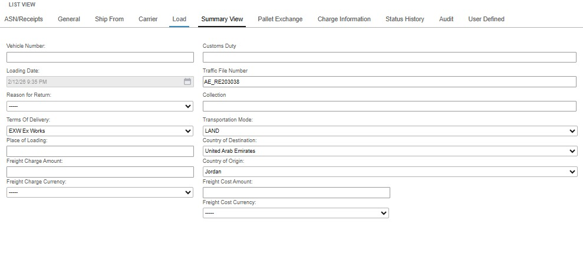

🚢 Manual ASN Creation in SCE11
Follow these steps to manually create an Advanced Shipping Notice within the
SCE11 system for international freight and hard-goods.
1. System Entry & Header
-
Access the System
Click the button below to log in to the production environment:
SCE11 Log in
Note: If errors
keep appearing after logging in, please open the link in Incognito Mode to resolve the issue.
-
Database Selection
Once logged in, ensure you enter the correct Warehouse (WH) database: either DIP or
MFC.
-
Navigation
Click on the Inbound drop-down menu and select ASN/Receipt.
-
Initialize Record
Once in the section, click New to start a new entry.
2. Detailed Configuration
-
Initial Setup (ASN/Receipt Section)
The first action after initialization is to add the PO Number and the
Documents Received Date (This should be the actual date of creation).
-
General Tab
Navigate to the General Tab and paste the invoice number under the Supplier
Invoice Number field.
-
Load Tab
Enter the following logistics details:
- Traffic File Number (LOG ID)
- Transportation Mode
- Terms of Delivery
- Country of Origin & Destination

-
User Defined Tab (UDF)
Fill out the remaining financial and physical data:
- Supplier Invoice Date
- Total Invoice Value & Total ASN Value
- Number of Cases / Or Pallets
✅ Final Step: Click Save from the top bar. You have now successfully
created an ASN manually in SCE11.